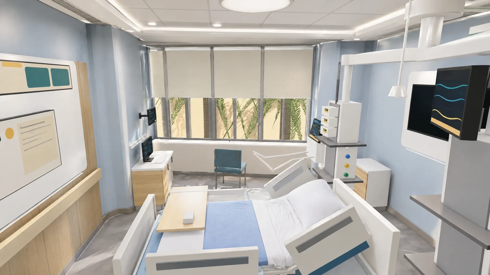
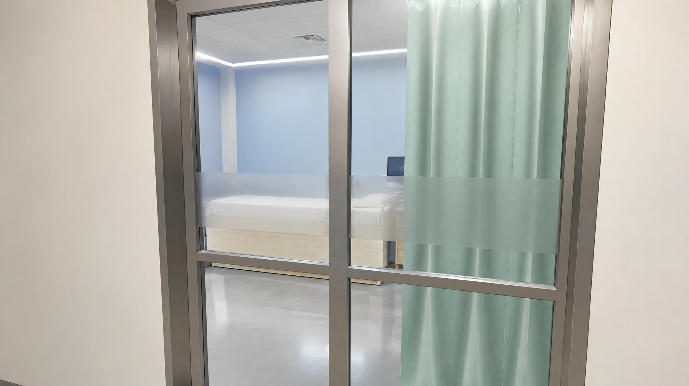
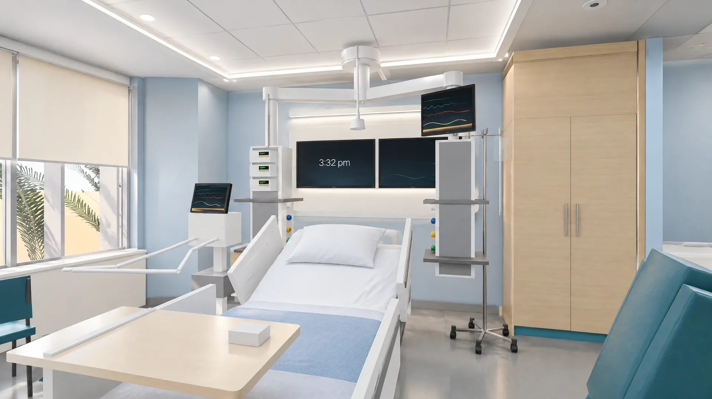
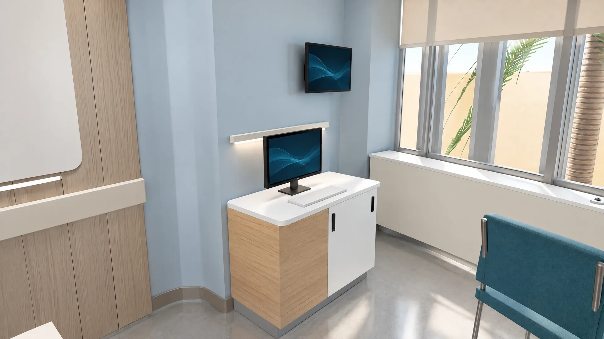
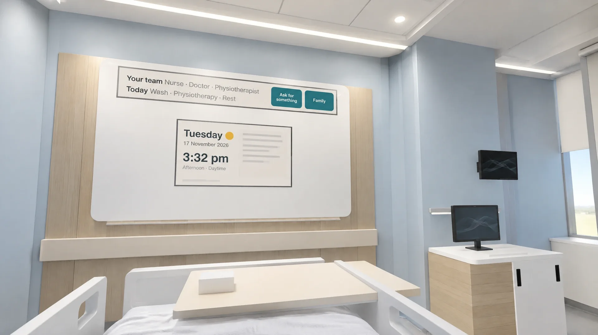
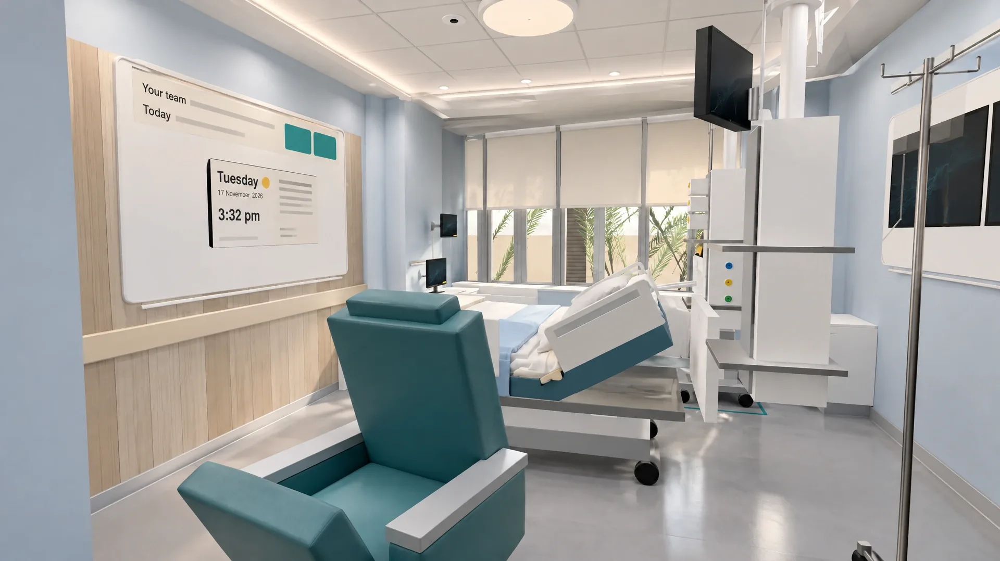
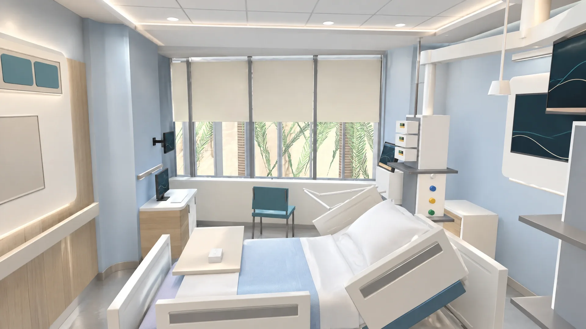
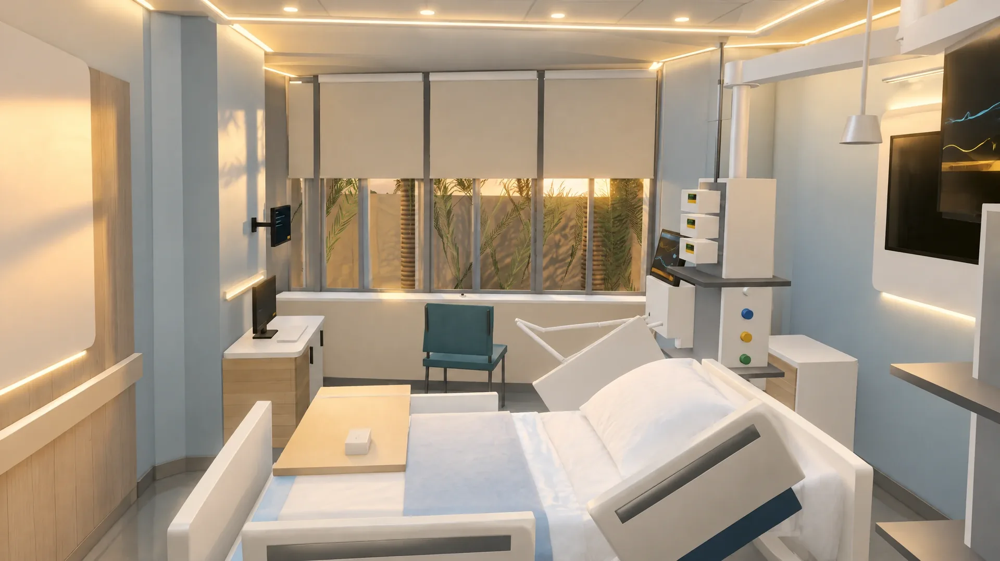
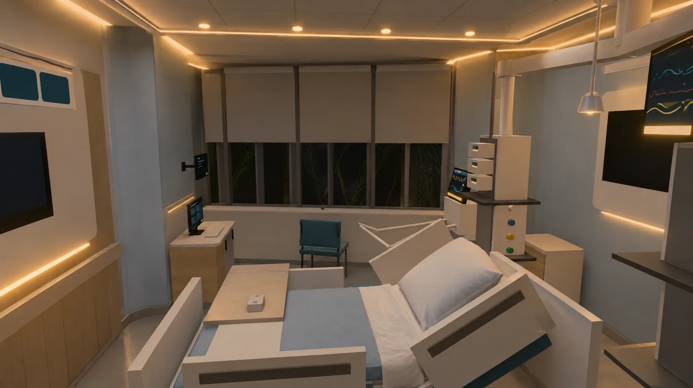
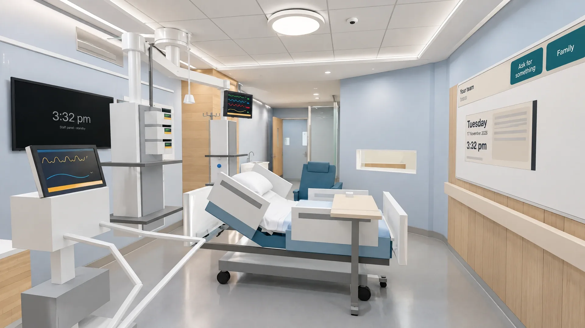

ICU Interior Design Student Competition · design proposal
A room that adapts to the patient in it.
Adaptive ICU is our design for the ICU on SSMC's fourth floor. The room adjusts its lights, blinds and glass to the time of day, what the patient likes and the care they need. A nurse approves every change.
Pictures of our 3D room, W1, finished as photos with an AI image tool. A student concept.

Arrive
A glass front
Staff can see in from the corridor. A curtain closes it when the patient wants privacy.

The care team
One wall behind the bed
A staff panel on the wall, and one arm from the ceiling for the monitor and pumps.

The care team
A desk inside the room
The clinician's workstation sits in sight of the patient.

The patient
What the patient sees
Who is on the team, what happens today, and what time it is.

The family
Somewhere to stay
A recliner beside the bed for whoever stays.

Through the day
Morning
Cool, bright light to start the day.

Through the day
Evening
The light warms as the sun goes down.

Through the day
Night
Dim amber light lines. Screens dimmed.

Your turn
Change it yourself
Open this room in 3D and try every option.